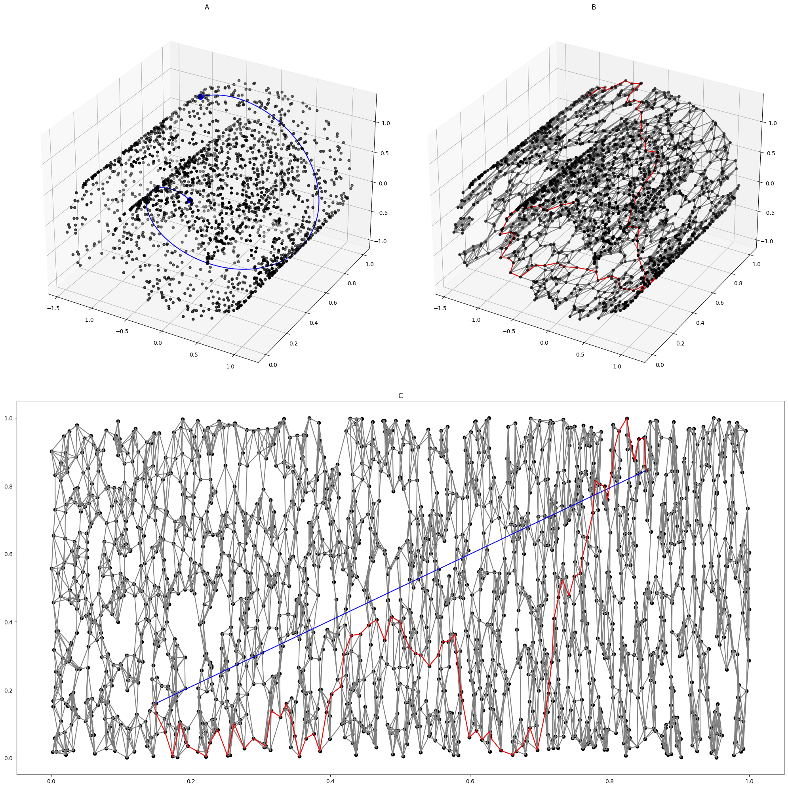
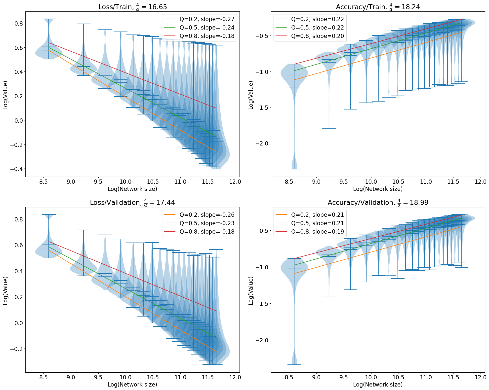

This is a theory of neural scaling law, proposed by (Bahri et al. 2021; Sharma and Kaplan 2022)
According to this theory, a neural network, when trained to convergence, allocates its \(N\) parameters in two parts: * A fixed number of parameters that map the data to an intrinsic data manifold of dim \(d\). * All other parameters that handle pieces of this manifold. Loss \(\propto\) the volume of each manifold piece.
They argued that the loss function should scale as \(L \propto N^{-4/d}\) for cross-entropy and mean-square losses.
The manifold hypothesis
Consider the space of all MNIST images. Each MNIST image is a 28x28 grayscale, so the total space is \(\mathbb R^{28\times 28} = \mathbb R^{784}\).
However, as you may have seen in experiments with the VAE, most of the MNIST dataset “collapses” onto a much smaller subset of \(\mathbb R^{784}\). This is the “(intrinsic) data manifold”, with a dimension much smaller than \(784\). Indeed, the very fact that the intrinsic dimension is small allows us to have meaningful “2D slices” of the dataset:
Real data can be expensive, though, which is why we often use “toy” datasets with known dimensions, generated by a known random process. For example, the following is the “Swiss roll” dataset. It is generated by first populating a 2D square \([0, 1]^2\), then use a function \(f: \mathbb R^2 \to \mathbb R^3\) to “roll up” the square into 3D space.

{kind=link}
Deriving the scaling law
We can get a feel for where the number \(4/d\) came from by studying a simpler model.
Prototype case
Consider a problem of regression. We have to learn the true function on the \(n\)-dimensional cube: \(f: [0, 1]^d \to \mathbb{R}\). Assume it is Lipschitz continuous, that is, its first derivative is upper bounded by \(\lambda\). In particular, this means \(|f(x) - f(y)| \leq \lambda |x-y|\) for all \(x, y\) in the domain.
We approximate the true function with a piecewise-constant function \(\hat f: [0, 1]^d \to \mathbb{R}\), meaning that its graph looks like a staircase. We divide the cube into \(N\) equal smaller cubic pieces, and define \(\hat f\) to be equal to the value of \(f\) at the center of each cubic piece.
Theorem 1 When the loss is mean square error, it scales like \(L = \Theta(N^{-2/d})\).
Proof. With \(N\) parameters, we can divide the \([0, 1]^d\) cube into \(N\) equal parts, therefore, each cube has side length \(N^{-1/d}\). Therefore, the distance between the center of each cube and the point farthest from the center is also \(\Theta(N^{-1/d})\).
Now, since the function has bounded first derivative, we know that the difference between the function value at the center of the cube and the function value at the farthest point is bounded by \(\lambda \cdot \Theta(N^{-1/d}) = \Theta(N^{-1/d})\). Therefore, the mean square loss on each individual little cube is bounded by \(\Theta(N^{-2/d})\).
And since the overall mean square loss is the average of the loss on each individual cube, the total loss is also bounded by \(\Theta(N^{-2/d})\).
Generalization
More generally, if \(f\) has bounded second-derivative, and we use a piecewise-linear \(\hat f\) function approximator, then the mean square loss scales like \(\Theta(N^{-4/d})\). By piece-wise linear, we mean that the domain of \(\hat f\) is divided into little cubes, and it is linear on each little cube.
Indeed, this generalizes in the obvious way:
Theorem 2 If the loss is mean \(p\)-th power loss, \(f\) has bounded \(k+1\)-th order derivatives, and \(\hat f\) is composed of piece-wise \(k\)-degree polynomials, then the loss scales like \(\Theta(N^{-p(k+1)/d})\).
Since the KL-divergence is approximately MSE loss when the predictor is close to correct, the loss scales like \(\Theta(N^{-2(k+1)/d})\) in this case.
Proof. We prove another case where the loss is still mean square error, but \(f\) has bounded \(2\)-th order derivatives.
By Taylor expansion, if we use the first-order Taylor expansion to approximate \(f\) at the center of each cube, then the error is bounded by \(\Theta(N^{-2/d})\). And since the mean square loss is the average of the square of the error, the total mean squared loss is bounded by \(\Theta(N^{-4/d})\) on each little cube.
And since the overall mean square loss is the average of the loss on each individual cube, the total loss is also bounded by \(\Theta(N^{-4/d})\).
For the general case, take the Taylor expansion to the \(k\)-th order at the center of each little cube.
Scaling of nearest neighbor rule
What is the worst possible scaling? It would be when \(k=0\) and \(p=1\), giving us \(L = \Theta(N^{-1/d})\). What does this mean? To have \(k=0\) means that we use piecewise-constant fitting function \(\hat f\). To have \(p=1\) means that we are using the L1-loss. This is essentially piecewise constant, median regression.
Under mild assumptions, the nearest neighbor rule for classification has the same form of scaling, where the loss is not L1-loss, but 0-1 loss.
People have found sharper scaling laws under assuming nicer datasets, using complicated functional analysis tools scaling laws. A dataset can be “nice” in several ways. One way is to have few outliers: it should have a thin tail, looking more like a box, rather than a gently rising hill. Another way is to have smoothly varying boundaries: its boundary should not look “bumpy”. See (Yang and Zhang 2023) for a brief review and further citations to the literature.
Experiments
According to the theory, if the data manifold has dimension \(d\), then as we scale up a neural network with \(N\) parameters, the MSE loss of a fully-trained network would scale like \(L \sim N^{-\alpha}\), where \(\alpha \approx 4/d\). We test this in two ways, once with synthetic datasets, where we know that the data manifold has the desired number of dimensions, and once with the CIFAR-10 dataset, where we do not have the dimension of the data manifold, and must estimate it.
All code for generating the dataset, and for analyzing the dataset, are in a GitHub repo: yuxi-liu-wired/scaling-law-by-data-manifold.
Synthetic data manifolds
Since Consider the simplest data manifold: \(\mathbb R^d\), affine-transformed, then embedded in \(\mathbb R^n\), with \(n > d\).
To synthesize such a data manifold, we randomly initialize a teacher network, so-called because it implements the function that a student network will fit to by supervised training. Each teacher network is constructed thus:
- The number of neurons in each layer are: \([d, 9, 600, 600, 1]\)
- It has 0 bias.
- The weights between layers are sampled from \(\mathcal N(0, m^{-1/2})\) , where \(m\) is the input size of the layer (a form of He initialization).
- The activation function at the second (with 9 neurons) and last layers are identity. All other activation functions are ReLU.
Once we have constructed a teacher network, we use it to generate a dataset \(\{(x_i, y_i)\}_i\) in this way:
- Generate random gaussian vectors \(\{t_i\}_i\) in \(\mathbb R^d\), with mean \(0\) and std \(I_{d\times d}\).
- For each \(t \in \{t_i\}_i\), push \(t\) through the teacher network.
- Let \(x \in \mathbb R^9\) be the teacher network activation at the second layer, with 9 neurons.
- Let \(y \in \mathbb R\) be the teacher network output.
First, we define the “student” neural network architecture:
- The number of neurons in each layer are: \([9, n, n, 1]\).
- The biases are initialized to 0.
- The weights between layers are sampled from \(\mathcal N(0, m^{-1/2})\), where \(m\) is the input size of the layer (a form of He initialization).
- All activation functions are ReLU.
The parameter count is
\[ N = \underbrace{(n+n+1)}_{\text{first layer}} + \underbrace{(9n + n^2 + n)}_{\text{second layer}} \]
With these settings, I ran the experiment many times, for \(N\) ranging from \(500\) to \(10000\), and \(d\) from \(2\) to \(18\). The results do not look as clean as given in the paper, despite that I have tried my best to match the experimental design as specified in the paper.
CIFAR-10
The CIFAR-10 dataset is a popular benchmark, consisting of 32-by-32 RGB images in 10 different image classes, with 6,000 images per class. While the images live in a space of dimension \(32^2 \times 3 = 3072\), (Sharma and Kaplan 2022) reports that the CIFAR-10 images lies in a data manifold with dimension of only around 16–18.
To fit the dataset, I trained a family of convolutional networks with 3 convolution layers and 2 fully connected layers on CIFAR-10. In order to run a controlled experiment, I varied as few parameters as possible, with the following designs:
- The network architecture is fixed, and the network parameter count is changed by changing a single number: the number of channels in the convolutional layers.
- The experiment is run with 20 different network sizes, from 5408 to 115114.
- Each training run lasts 50 epochs, with batch size 128.
- The optimizer is
AdamWwithlr=5e-4.
With these settings, I generated all the data and logged them into TensorBoard log files, then cleaned them up for quantile regression. Plotting in log-log scale, with the x-axis being the model parameter count, and the y-axis being the cross-entropy loss, we would get a downward sloping line. Our hope is that the line should have a slope of close to \(-4/d\), where \(d \approx 17\).
This is exactly what I have found. Not only is it true for cross-entropy loss, it is also true for classification accuracy (0-1 loss), except the slope is \(+4/d\).
